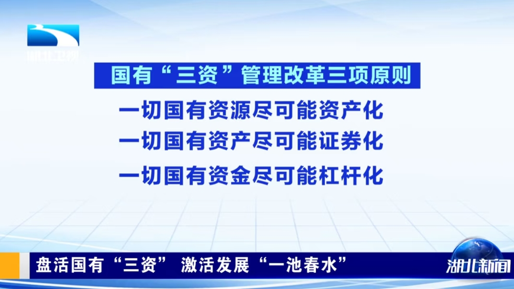

国有资源的资产证券化#

湖北：大力推进国有“三资”管理改革！
湖北日报 10-21 11:54
摘要：要进一步深化认识，更加深刻把握“一切国有资源尽可能资产化、一切国有资产尽可能证券化、一切国有资金尽可能杠杆化”三项原则，更加科学运用“能用则用、不用则售、不售则租、能融则融”四种方式，进一步推动全省国有“三资”管理改革取得更大成效。
10月16日，湖北省委副书记、省长李殿勋在武汉市调研国有“三资”管理改革并召开推进会部署安排重点任务。
李殿勋来到洪山人工智能大厦，详细了解洪山区通过资产证券化盘活低效商业地产、打造高能级科创园区的做法及成效，强调要加快推动园区运营模式从“以土地为核心”向“以资本为核心”转变，进一步强化“创投资本和孵化平台”两个关键支撑，努力打造新型“创投孵化园区”。在青山江滩公园，李殿勋深入调研青山区盘活水利堤防设施和老旧堤岸码头建设“城市公共客厅”和“婚庆产业园区”情况，强调要因地制宜推动国有资源资产化，进一步提升长江、汉江等优质岸线资源综合利用水平，在有效满足防洪和生态要求的同时，努力实现更大的经济和社会效益。在湖北文旅·国宾颐养中心，李殿勋了解湖北文旅集团将接收的行政事业单位低效闲置资产改造为高端健康养老中心的情况，强调要进一步改革投融资体制和创新商业模式，探索更多“办得到、能推广、可持续”的国有资产盘活路径。在小洪山数据产业园，李殿勋了解湖北大数据集团服务全省国有数据资源盘活及公共数据开发利用情况，强调要坚持需求牵引与供给导向相结合，更加有力有效挖掘公共数据资源价值，为推动数字产业化和产业数字化作出新的更大贡献。
推进会上，湖北省有关部门、部分市州政府、省属企业汇报了改革进展情况。李殿勋指出，深化国有“三资”管理改革、加快建设大财政体系，是提高国有经济运行效率的内在要求，也是应对当前稳增长、防风险、保民生的关键支撑。要进一步深化认识，更加深刻把握“一切国有资源尽可能资产化、一切国有资产尽可能证券化、一切国有资金尽可能杠杆化”三项原则，更加科学运用“能用则用、不用则售、不售则租、能融则融”四种方式，进一步推动全省国有“三资”管理改革取得更大成效。
李殿勋强调，深化全省国有“三资”管理改革，一要进一步开展全面清查，在前期工作基础上，聚焦“土地、矿产、林业、水利、能源、数据”六类国有资源，“实物、债权、股权、特许经营权、未来收益权”五类国有资产，以及“闲置和低效”两类国有资金，深入开展新一轮清查并分类研判、科学入库，为持续深化改革提供坚实基础。二要完善配套制度，针对前期改革遇到的权属界定、价值核算、操作规范等突出问题，分类制定指导意见，加强理论宣讲、政策培训和案例指导，同时建立跨部门推进机制，及时协调解决难点堵点问题。三要继续大胆创新，探索更多国有资源资产化、国有资产证券化、国有资金杠杆化的实现路径，努力提高“高效利用和科学处置”综合效能。在努力盘活“土地、矿产、闲置房屋、管网设施、风光资源、数据资源”等资源资产的同时，特别要立足湖北得天独厚的资源禀赋，更加重视高效盘活“水资源、水工程、水生态”并大力发展“绿色水经济”，更加重视高效盘活“林地、林木、林生态”并大力发展“现代林经济”，努力塑造更多体现湖北优势的引领型发展。四要加强改革统筹，在深化国有“三资”管理改革的同时，统筹推进财政零基预算改革和政府投融资体制改革，通过零基预算改革，更好管控支出总量、优化支出结构、创新支出方式，让财政资金发挥更大使用效益；通过投融资体制改革，创新基础设施、产业园区、创新创业、民生保障等政府投资项目的投资体制、运营机制和商业模式，努力实现投入产出的总体平衡和良性循环。要坚持依靠进一步全面深化改革，加速重构新的发展模式和增长动力，努力推动全省经济社会高质量发展。
国有资源资产证券化#
如上图和引用文章，多个省份已经开启新一轮国有资源的资产证券化。除了 AI 科技泡沫抬升权益市场的估值，另一个推动本轮沪深股市上涨的核心力量就是国有资源的资产证券化。
能被资源证券化打包售卖给二级市场的国有资源，一定不会是还能长期产生高成长的核心垄断资源，本轮沪深股市的其中一个上涨核心动力明显是希望借助二级市场的资金化解地方政府债务，因此这些证券化的资产质量堪忧，后续大概率出现“散户接盘”即将二级市场私人部门的资金转移到地方政府部门。
2025.10.26